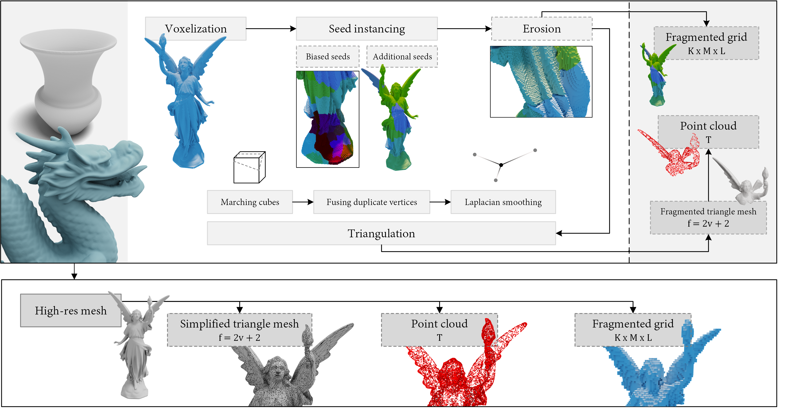
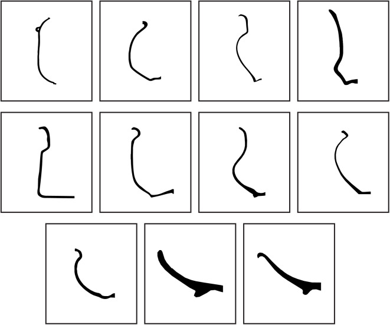

Dataset
Our fragment dataset was generated with 1,052 Iberian vessels, by fragmenting every mesh between 2 and 10 times. The number of iterations for every number of fragments was linearly interpolated in [25, 15], hence generating 25 fragments while breaking models into 2 pieces. The fragmentation was stopped for every mesh once 1k fragments were obtained. A total of 1,040,428 point clouds and triangle meshes have been released together with 187,257 voxelizations. From these, 1,052 are dedicated to storing the original mesh. Triangle meshes are saved in their original format, as obtained from marching cubes, point clouds were sampled with 1024 points, and voxelizations have a resolution of up to 1283.
Accessing the dataset
The dataset has been released in our research centre page. It was split into multiple files since the whole zip was about 450 GB. A lighter version, with 200 fragmented vessels and no individual file zipping has also been provided with .obj and .ply file formats (27 GB).
Decompress binary files
We have provided sample scripts to decompress meshes, point clouds and voxels. Decompression for mesh and voxel has been implemented in Python, where point clouds are decompressed in C++ since it requires the Point Cloud Library (PCL).

Vessel classification
Our dataset is supplied as a single file, but the root name of files determine the vessel classification, as detailed in a previous work of ours. This a yet unexplored branch since archaeological artefacts are hardly found intact; indeed, it is rather common to find small fragments. All these factors harden their digitization, and therefore, any application operating over 3D archaeological artefacts is hard to reproduce in the real-world. Yet, we provide class_vessel.csv for any future work that may find helpful this vessel categorization.

Eleven vessel profiles, as annotated in the provided class_vessel.csv file